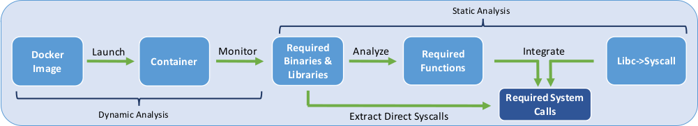

Confine can be used to generate restrictive Seccomp profiles for Docker images. Due to the nature of OS virtualization technologies, such as Docker, isolation among different containers is enforced at the software layer in the Linux kernel. By prohibiting access to unnecessary system calls, we target reducing the attack surface of the Linux kernel. With reliability and soundness in mind, Confine has been built mainly using static analysis. To gain a better understanding of how Confine works we provide an overview in this section. We suggest reading our paper for more details.
We have used an LLVM pass to create a call graph for musl-libc which maps all the exported functions to system calls. We also used the gcc RTL and the egypt tool to create a call graph for glibc. We mainly rely on these two call graphs along with the functions imported from these two libraries in other applications and libraries to generate the list of required system calls.
Please consider citing our paper if you found our tool set useful.
@inproceedings{confineraid20,
year={2020},
booktitle={Proceedings of the International Conference on Research in Attacks,
Intrusions, and Defenses (RAID)},
title={Confine: Automated System Call Policy Generation for Container Attack
Surface Reduction},
author={Ghavamnia, Seyedhamed and Palit, Tapti and Benameur, Azzedine and
Polychronakis, Michalis}